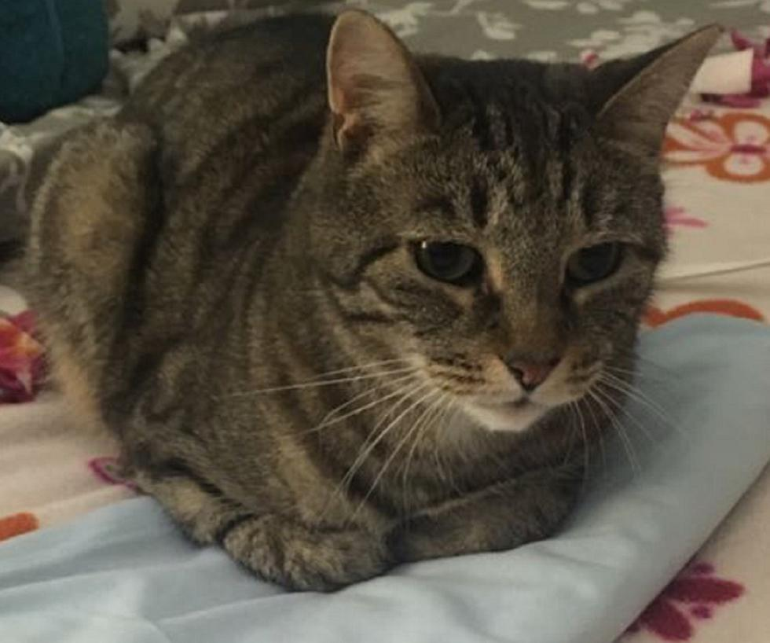
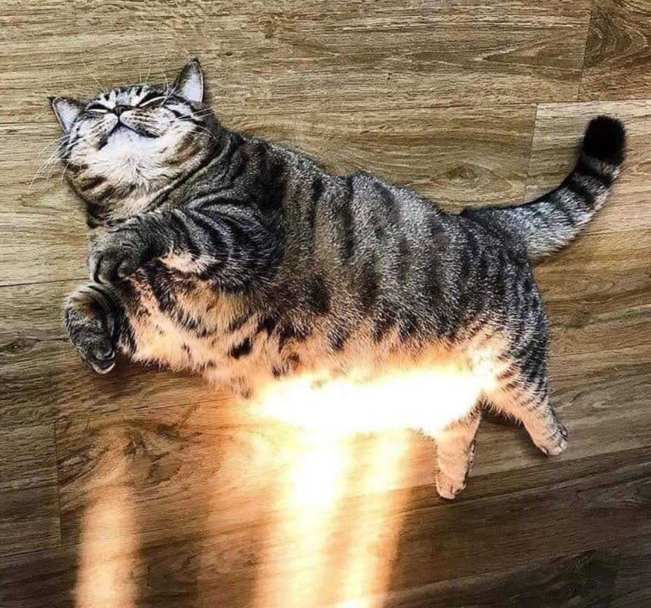

Who Am I?

Lennart has recently not been giving me ALL of his attention, and this is a problem.
Proof!You can find me in the darkest corners of every room, contemplating the futility of existing. When existential dread is the only thing that is left seeping into my very marrow.
Like every cat I have my weird habits, doing flips because I can, wanting to be pet and cuddled then getting mad that I did. But I have seen this one cat crunching on corn. Now I am not a corn cruncher myself, however, it is an honorable mention to a groundbreaking acheivement in all of cat society.
From the very beginning of creation we cats have desired one thing. I long for the day I can truly photosynthesize, true lethargy obtained!
